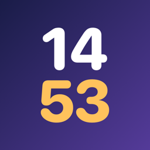

1453
Saat kaçsa, o yılda ne oldu? · A year in history every minute
Destek
Saat 14:53 ise araç takımı 1453 yılında olan bir olayı gösterir. Soru, öneri ya da yanlış bir bilgi bildirmek için bize yazın: burakavar@gmail.com
Araç takımı nasıl eklenir?
- Kilit ekranı: Kilit ekranına basılı tutun → Özelleştir → Kilit Ekranı → saatin altındaki araç takımı alanına dokunun → 1453.
- Ana ekran: Boş bir yere basılı tutun → Düzenle → Araç Takımı Ekle → 1453.
- StandBy: iPhone şarjdayken yan yatırın; küçük araç takımı orada da görünür.
Araç takımı güncellenmiyor
Uygulamayı bir kez açın. Sorun sürerse araç takımını kaldırıp yeniden ekleyin.
Support
At 14:53, the widget shows an event from the year 1453. For questions, suggestions or to report a mistake, write to burakavar@gmail.com.
How do I add the widget?
- Lock Screen: Touch and hold the Lock Screen → Customize → Lock Screen → tap the area below the clock → 1453.
- Home Screen: Touch and hold an empty area → Edit → Add Widget → 1453.
- StandBy: Turn your iPhone sideways while charging; the small widget shows up there too.
The widget isn't updating
Open the app once. If it still doesn't update, remove the widget and add it again.
Olaylar Wikipedia'nın yıl sayfalarından derlenip yeniden yazılmıştır (CC BY-SA 4.0).